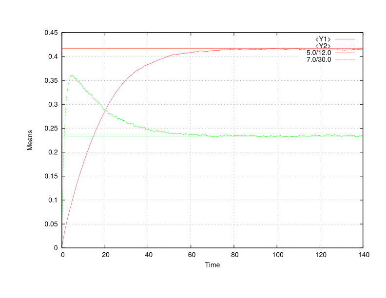
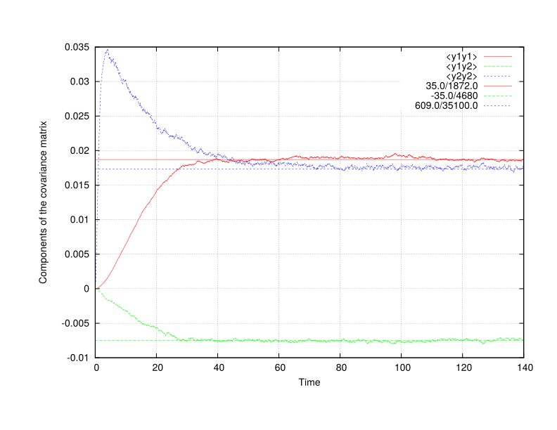

Walker: Integrating the generalized Dirichlet SDE
This example runs Walker to integrate the generalized Dirichlet SDE (see DiffEq/GeneralizedDirichlet.h) using constant coefficients. For more details on the generalized Dirichlet SDE, see https:/
Control file
This example runs the setup that was used in the paper Bakosi, Ristorcelli, A Stochastic Diffusion Process for Lochner's generalized Dirichlet distribution, J. Math. Phys., 2013.
title "Generalized Dirichlet for the JMP paper" walker term 140.0 # Max time dt 0.025 # Time step size npar 10000 # Number of particles ttyi 1000 # TTY output interval rngs mkl_mrg32k3a seed 0 end end gendir # Select generalized Dirichlet SDE depvar y init zero coeff const ncomp 2 # = K = N-1 b 0.1 1.5 end S 0.625 0.4 end kappa 0.0125 0.3 end c -0.0125 end rng mkl_mrg32k3a end statistics # Estimate statistics <Y1> <Y2> <y1y1> <y2y2> <y1y2> end end
Example run on a single CPU
Main/walker -v -c ../../tmp/gd.q
Output
Charm++> Running on MPI version: 3.0
Charm++> level of thread support used: MPI_THREAD_SINGLE (desired: MPI_THREAD_SINGLE)
Charm++> Running in non-SMP mode: numPes 1
Converse/Charm++ Commit ID: b8b2735
CharmLB> Load balancer assumes all CPUs are same.
Charm++> Running on 1 unique compute nodes (4-way SMP).
Charm++> cpu topology info is gathered in 0.000 seconds.
,::,` `.
.;;;'';;;: ;;#
;;;@+ +;;; ;;;;;, ;;;;. ;;;;;, ;;;; ;;;; `;;;;;;: ;;;
:;;@` :;;' .;;;@, ,;@, ,;;;@: .;;;' .;+;. ;;;@#:';;; ;;;;'
;;;# ;;;: ;;;' ;: ;;;' ;;;;; ;# ;;;@ ;;; ;+;;'
.;;+ ;;;# ;;;' ;: ;;;' ;#;;;` ;# ;;@ `;;+ .;#;;;.
;;;# :;;' ;;;' ;: ;;;' ;# ;;; ;# ;;;@ ;;; ;# ;;;+
;;;# .;;; ;;;' ;: ;;;' ;# ,;;; ;# ;;;# ;;;: ;@ ;;;
;;;# .;;' ;;;' ;: ;;;' ;# ;;;; ;# ;;;' ;;;+ ;', ;;;@
;;;+ ,;;+ ;;;' ;: ;;;' ;# ;;;' ;# ;;;' ;;;' ;':::;;;;
`;;; ;;;@ ;;;' ;: ;;;' ;# ;;;';# ;;;@ ;;;:,;+++++;;;'
;;;; ;;;@ ;;;# .;. ;;;' ;# ;;;;# `;;+ ;;# ;# ;;;'
.;;; :;;@ ,;;+ ;+ ;;;' ;# ;;;# ;;; ;;;@ ;@ ;;;.
';;; ;;;@, ;;;;``.;;@ ;;;' ;+ .;;# ;;; :;;@ ;;; ;;;+
:;;;;;;;+@` ';;;;;'@ ;;;;;, ;;;; ;;+ +;;;;;;#@ ;;;;. .;;;;;;
.;;#@' `#@@@: ;::::; ;:::: ;@ '@@@+ ;:::; ;::::::
:;;;;;;. __ __ .__ __
.;@+@';;;;;;' / \ / \_____ | | | | __ ___________
` '#''@` \ \/\/ /\__ \ | | | |/ // __ \_ __ \
\ / / __ \| |_| <\ ___/| | \/
\__/\ / (____ /____/__|_ \\___ >__|
\/ \/ \/ \/
< ENVIRONMENT >
------ o ------
* Build environment:
--------------------
Hostname : sprout
Executable : walker
Version : 0.1
Release : LA-CC-XX-XXX
Revision : e26d8f8514a11ade687ba460f42dfae5af53d4d6
CMake build type : DEBUG
Asserts : on (turn off: CMAKE_BUILD_TYPE=RELEASE)
Exception trace : on (turn off: CMAKE_BUILD_TYPE=RELEASE)
MPI C++ wrapper : /opt/openmpi/1.8/clang/system/bin/mpicxx
Underlying C++ compiler : /usr/bin/clang++-3.5
Build date : Fri Feb 6 06:39:01 MST 2015
* Run-time environment:
-----------------------
Date, time : Sat Feb 7 19:31:35 2015
Work directory : /home/jbakosi/code/quinoa/build/clang
Executable (rel. to work dir) : Main/walker
Command line arguments : '-v -c ../../tmp/gd.q'
Output : verbose (quiet: omit -v)
Control file : ../../tmp/gd.q
Parsed control file : success
< FACTORY >
---- o ----
* Particle properties data layout policy (CMake: LAYOUT):
---------------------------------------------------------
particle-major
* Registered differential equations:
------------------------------------
Unique equation types : 8
With all policy combinations : 18
Legend: equation name : supported policies
Policy codes:
* i: initialization policy: R-raw, Z-zero
* c: coefficients policy: C-const, J-jrrj
Beta : i:RZ, c:CJ
Diagonal Ornstein-Uhlenbeck : i:RZ, c:C
Dirichlet : i:RZ, c:C
Gamma : i:RZ, c:C
Generalized Dirichlet : i:RZ, c:C
Ornstein-Uhlenbeck : i:RZ, c:C
Skew-Normal : i:RZ, c:C
Wright-Fisher : i:RZ, c:C
< PROBLEM >
---- o ----
* Title: Generalized Dirichlet for JMP paper
--------------------------------------------
* Differential equations integrated (1):
----------------------------------------
< Generalized Dirichlet >
kind : stochastic
dependent variable : y
initialization policy : Z
coefficients policy : C
start offset in particle array : 0
number of components : 2
random number generator : MKL MRG32K3A
coeff b [2] : { 0.1 1.5 }
coeff S [2] : { 0.625 0.4 }
coeff kappa [2] : { 0.0125 0.3 }
coeff c [1] : { -0.0125 }
* Output filenames:
-------------------
Statistics : stat.txt
* Discretization parameters:
----------------------------
Number of time steps : 18446744073709551615
Terminate time : 140
Initial time step size : 0.025
* Output intervals:
-------------------
TTY : 1000
Statistics : 1
* Statistical moments and distributions:
----------------------------------------
Estimated statistical moments : <Y1> <Y2> <y1y1> <y1y2> <y2y2>
* Load distribution:
--------------------
Virtualization [0.0...1.0] : 0
Load (number of particles) : 10000
Number of processing elements : 1
Number of work units : 1 (0*10000+10000)
* Time integration: Differential equations testbed
--------------------------------------------------
Legend: it - iteration count
t - time
dt - time step size
ETE - estimated time elapsed (h:m:s)
ETA - estimated time for accomplishment (h:m:s)
out - output-saved flags (S: statistics, P: PDFs)
it t dt ETE ETA out
---------------------------------------------------------------
1000 2.500000e+01 2.500000e-02 000:00:05 000:00:27 S
2000 5.000000e+01 2.500000e-02 000:00:11 000:00:21 S
3000 7.500000e+01 2.500000e-02 000:00:17 000:00:15 S
4000 1.000000e+02 2.500000e-02 000:00:23 000:00:09 S
5000 1.250000e+02 2.500000e-02 000:00:29 000:00:03 S
Normal finish, maximum time reached: 140.000000
* Timers (h:m:s):
-----------------
Initial conditions : 0:0:0
Migration of global-scope data : 0:0:0
Total runtime : 0:0:32
[Partition 0][Node 0] End of program
Results
This is case 2 in the paper referenced above. Left – time evolution of the means and the means of the invariant distribution, right – time evolution of the components of the covariance matrix and those of the invariant.


Gnuplot commands to reproduce the above plots:
plot "stat.txt" u 2:3 w l t "<Y1>", "stat.txt" u 2:4 w l t "<Y2>", 5.0/12.0 lt 1, 7.0/30.0 lt 2 plot "stat.txt" u 2:5 w l t "<y1y1>", "stat.txt" u 2:6 w l t "<y1y2>", "stat.txt" u 2:7 w l t "<y2y2>", 35.0/1872.0 lt 1, -35.0/4680 lt 2, 609.0/35100.0 lt 3